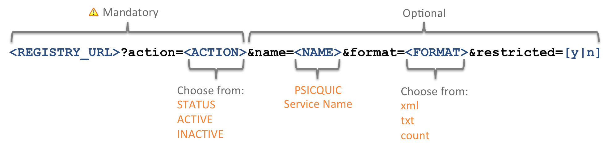

The Registry
A registry exists that shows which PSICQUIC services exist and what is their current state. It can be found here http://www.ebi.ac.uk/Tools/webservices/psicquic/registry/registry?action=STATUS.
The registry also shows the number of total binary interactions that each resource has made available through PSICQUIC.
Access
There are different ways to access the service, depending if you just want to have a quick look or have an application that want to check the services status programmatically. The URL to access the Registry is RESTful, and follows this syntax:

Except for the action parameter, the rest are optional. The following tables show what values are available for each parameter:
The following table summarises the different parameters that can be passed to the URL.
| Parameter | Mandatory | Default | Description |
|---|---|---|---|
| action | Yes | The action to be done | |
| format | No | The format to use when viewing the registry | |
| name | No | Filters the list by name | |
| restricted | No | y | Allows to filter the restricted services from the list |
| tags | No | Allows to filter by tag the services from the list |
Parameters
The 'action' parameter
This parameter is mandatory.
| Value | Description | Example |
|---|---|---|
| STATUS | Lists all the services | http://www.ebi.ac.uk/Tools/webservices/psicquic/registry/registry?action=STATUS |
| ACTIVE | Only shows the active services | http://www.ebi.ac.uk/Tools/webservices/psicquic/registry/registry?action=ACTIVE |
| INACTIVE | Only shows the inactive services | http://www.ebi.ac.uk/Tools/webservices/psicquic/registry/registry?action=INACTIVE |
The 'format' parameter
This parameter is optional. The default behaviour is to show an web page with the services.
| Value | Description | Example |
|---|---|---|
| none | Shows a web page | http://www.ebi.ac.uk/Tools/webservices/psicquic/registry/registry?action=STATUS |
| xml | Returns an XML response with all the available information | http://www.ebi.ac.uk/Tools/webservices/psicquic/registry/registry?action=ACTIVE&format=xml |
| txt | Simple text page that contains the name and SOAP URLs of the services separated by an '=' character | http://www.ebi.ac.uk/Tools/webservices/psicquic/registry/registry?action=STATUS&format=txt |
| count | Returns just the count of services | http://www.ebi.ac.uk/Tools/webservices/psicquic/registry/registry?action=ACTIVE&format=count |
The 'name' parameter
The name is optional and can be used just to get the information for one specific service.
http://www.ebi.ac.uk/Tools/webservices/psicquic/registry/registry?action=STATUS&name=IntAct
http://www.ebi.ac.uk/Tools/webservices/psicquic/registry/registry?action=STATUS&name=MINT&format=xml
The 'restricted' parameter
The restricted parameter is optional. It can be used to hide from the list those services that are restricted, normally due to licensing issues.
| Value | Description | Example |
|---|---|---|
| y | All services including restricted services | http://www.ebi.ac.uk/Tools/webservices/psicquic/registry/registry?action=STATUS&restricted=y |
| n | All services excluding restricted services | http://www.ebi.ac.uk/Tools/webservices/psicquic/registry/registry?action=STATUS&restricted=n |
The 'tags' parameter
The tags parameter is optional. it can be used to select a specific list of PSICQUIC services based on the tagging of their data content. There are currently 5 data content main categories described on the PsicquicServiceTags page. You can describe a specific tag by either using its name or its MI ontology identifier (e.g. MI:0960 is equivalent to 'imex curation'). You can build a query using the boolean operators AND, OR and NOT. Here are a few sample queries:
| Description | Query | URL |
|---|---|---|
| Only IMEx data providers | imex curation | http://www.ebi.ac.uk/Tools/webservices/psicquic/registry/registry?action=STATUS&tags=imex%20curation |
| protein protein interaction and internally-curated | protein-protein AND internally-curated | http://www.ebi.ac.uk/Tools/webservices/psicquic/registry/registry?action=STATUS&tags=protein-protein%20AND%20internally-curated |
| protein protein interaction AND neither text mining nor predicted | protein-protein AND NOT (text-mining OR predicted) | http://www.ebi.ac.uk/Tools/webservices/psicquic/registry/registry?action=STATUS&tags=protein-protein AND NOT (text-mining OR predicted) |
Please note that when encoding the query into a URL you will have to encode special characters following standard guidelines. For your convenience we have summarised the main ones you will need with tags here:
| Character | Encoding |
|---|---|
| Space | %20 |
| - | %2D |
| : | %3A |
| ( | %28 |
| ) | %29 |